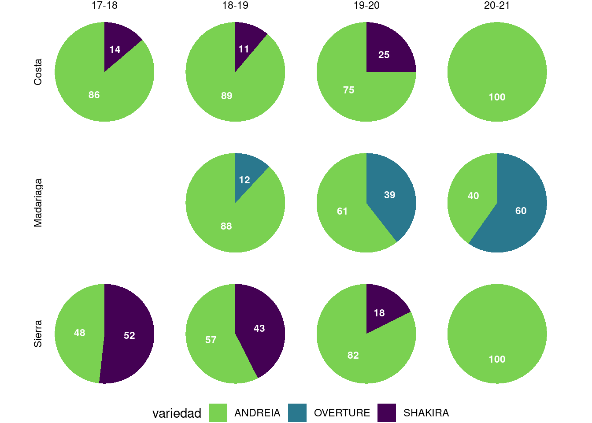
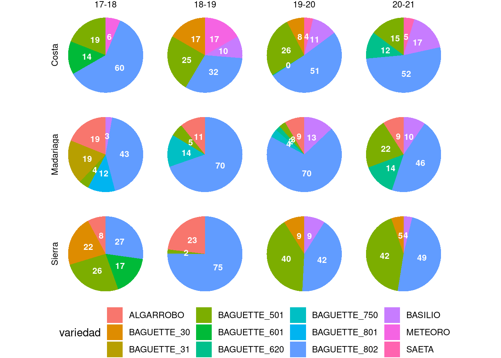
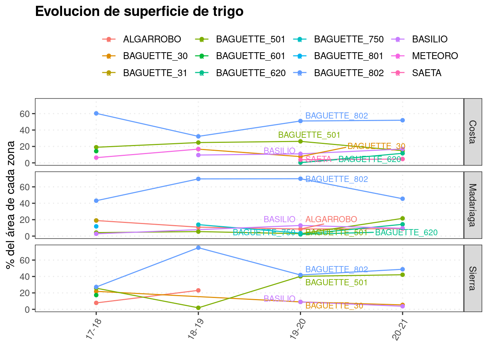
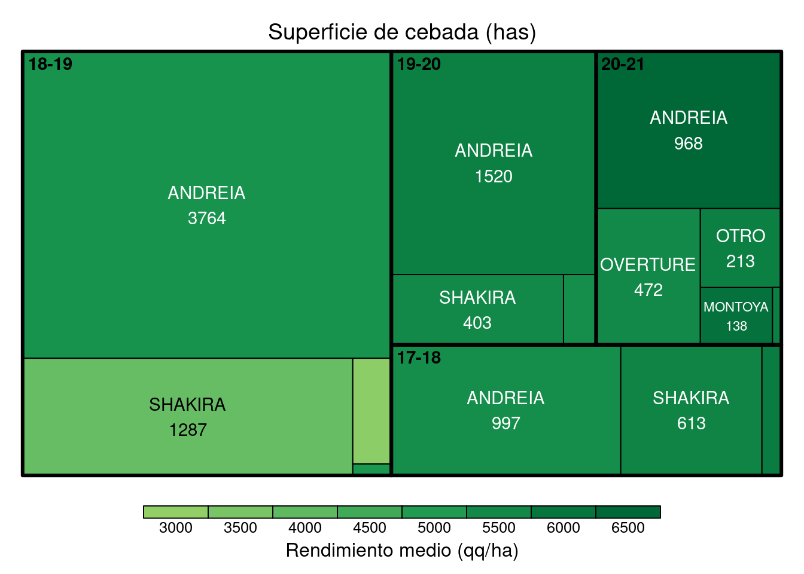
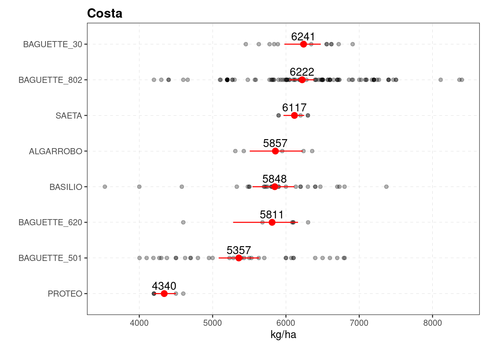
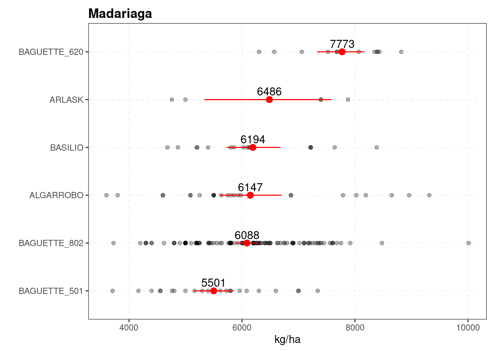
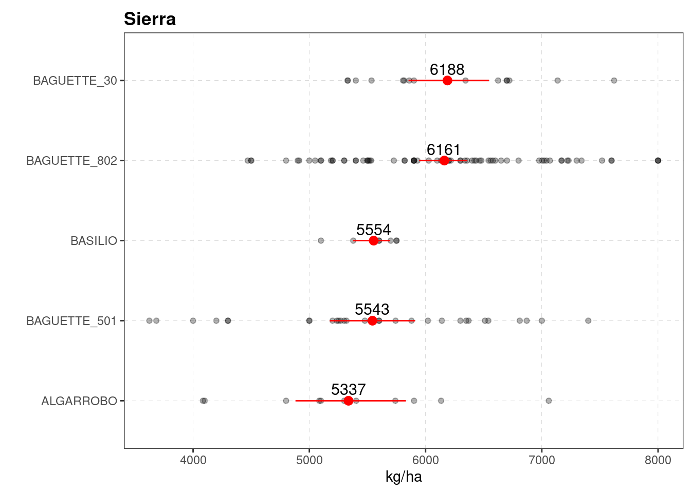
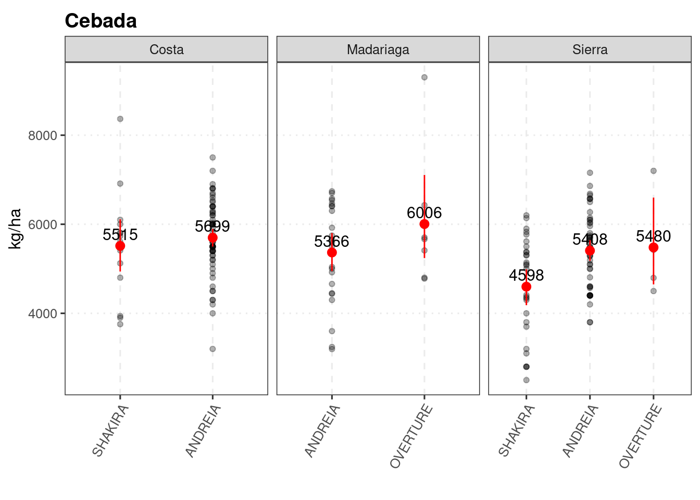

6 Variedades
dat %>%
filter(str_detect(cultivo_de_cosecha, 'Tr|Ceb')) %>%
select(cultivo_de_cosecha, campana,Zona, variedad, rinde, superficie ) %>%
group_by(cultivo_de_cosecha, Zona, variedad) %>%
filter(n() > 5) %>% ungroup %>%
mutate_if(is.character, as.factor) %>%
group_by(cultivo_de_cosecha, Zona, campana, variedad) %>%
summarise(#var_lotes= n(),
var_sup = sum(superficie, na.rm = TRUE),
rinde_medio = median(rinde, na.rm = TRUE),
.groups = 'drop') %>%
group_by(cultivo_de_cosecha, Zona, campana) %>%
mutate(porcent=var_sup/sum(var_sup)*100) -> dat_var
dat_var## # A tibble: 82 x 7
## # Groups: cultivo_de_cosecha, Zona, campana [26]
## cultivo_de_cosecha Zona campana variedad var_sup rinde_medio porcent
## <fct> <fct> <fct> <fct> <dbl> <dbl> <dbl>
## 1 Cebada Costa 17-18 ANDREIA 500 5400 86.2
## 2 Cebada Costa 17-18 SHAKIRA 80 6100 13.8
## 3 Cebada Costa 18-19 ANDREIA 2014 5500 88.8
## 4 Cebada Costa 18-19 SHAKIRA 253 3920. 11.2
## 5 Cebada Costa 19-20 ANDREIA 860 5700 75.0
## 6 Cebada Costa 19-20 SHAKIRA 287 5536 25.0
## 7 Cebada Costa 20-21 ANDREIA 319 6225 100
## 8 Cebada Madariaga 18-19 ANDREIA 488. 4790. 88.1
## 9 Cebada Madariaga 18-19 OVERTURE 66 5665 11.9
## 10 Cebada Madariaga 19-20 ANDREIA 118. 6024 60.6
## # … with 72 more rowsdat_var %>% #data.frame
filter(cultivo_de_cosecha =="Cebada") %>%
ggplot(aes(x =factor(1), y = porcent, fill = variedad)) +
geom_bar(stat='identity') +
coord_polar(theta = "y")+
facet_grid(Zona ~ campana, switch = "y")+
theme_void()+
geom_text(aes(label=paste0(round(porcent))),
position=position_stack(vjust=0.5), color="white",size=3, fontface ="bold")+
theme(legend.position="bottom")+
scale_fill_viridis_d(begin = 0, end =0.8, direction = -1)
# ggsave(last_plot(), file = "plots/sup_var_zona_ceb.png", width = 7, height = 4)
# drive_upload(path = as_dribble("juanchi_guille/JMF_fina_2020"), "plots/sup_var_zona_ceb.png", overwrite = TRUE)dat_var %>% #data.frame
filter(cultivo_de_cosecha =="Trigo") %>%
ggplot(aes(x =factor(1), y = porcent, fill = variedad)) +
geom_bar(stat='identity') +
coord_polar(theta = "y")+
facet_grid(Zona ~ campana, switch = "y")+
theme_void()+
geom_text(aes(label=paste0(round(porcent))),
position=position_stack(vjust=0.5), color="white",size=3, fontface ="bold")+
theme(legend.position="bottom")+
scale_fill_hue()
dat_var %>%
filter(cultivo_de_cosecha == "Trigo") %>%
# filter(variedad == "Andreia")
# drop_na(rinde) %>%
ggplot(aes(x = factor(campana),
y = porcent,
col = variedad,
group =variedad))+
geom_line()+geom_point()+
facet_grid(Zona~.)+
labs(x = NULL, y = "% del área de cada zona", col="",
title = "Evolucion de superficie de trigo")+
# guides(col="none")+
ggrepel::geom_text_repel(
data = dat_var %>%
filter(cultivo_de_cosecha == "Trigo") %>%
filter(campana == "19-20"),
# drop_na(tecno_sts),
aes(label = variedad), size =3, nudge_x = 0.1) +
theme_dens1
6.1 Superficies (tamaño de cuadrados) y rendimientos (intensidad de color)
dat_sum <- dat %>%
# filter(cultivo_de_cosecha == "Trigo") %>%
# filter(campana == "19-20") %>%
# group_by(variedad) %>%
# filter(n()>10) %>% ungroup %>%
group_by(campana, cultivo_de_cosecha, variedad) %>%
summarise(lotes= n(),
sup = sum(superficie, na.rm = TRUE),
rinde_medio = median(rinde, na.rm = TRUE), .groups = 'drop') %>%
mutate_if(is.character, as.factor)%>%
mutate(label = paste(variedad, round(sup,0), sep = "\n")) # png(filename="plots/treemap_trigo_17-18.png",
# width = 120, height = 120, units='mm', res = 300)
subset(dat_sum,
cultivo_de_cosecha == "Trigo" &
campana == '17-18') %>%
treemap(index="label",
vSize="sup",
vColor="rinde_medio",
# border.col=c("grey70", "grey90"),
# palette="Spectral",
type = "value",
title = "Superficie de trigo (has) - 2017/18",
title.legend = "Rendimiento medio (qq/ha)",
overlap.labels=1,
bg.labels=c("transparent"),
inflate.labels=F,
align.labels=c("center", "center")) 
# dev.off()
# drive_upload(path = as_dribble("juanchi_guille/JMF_fina_2020"), "plots/treemap_trigo_17-18.png", overwrite = TRUE)evol_trigo <- list.files(path = here::here("plots"),
pattern = "treemap_",
all.files = TRUE, full.names = TRUE)
evol_trigo %>%
map(~ drive_upload(.,
path = as_dribble("juanchi_guille/JMF_fina_2020"),
overwrite = TRUE)
)# png(filename="plots/treemap_cebada.png",
# width = 120, height = 120, units='mm', res = 300)
subset(dat_sum,
cultivo_de_cosecha == "Cebada" ) %>%
treemap(index=c("campana", "label"),
vSize="sup",
vColor="rinde_medio",
# border.col=c("grey70", "grey90"),
# palette="Spectral",
type = "value",
title = "Superficie de cebada (has)",
title.legend = "Rendimiento medio (qq/ha)",
overlap.labels=1,
bg.labels=c("transparent"), # Background color of labels
inflate.labels=F,
align.labels=list(
c("left", "top"),
c("center", "center"))) 
6.2 Performance variedades
dat %>%
filter(str_detect(cultivo_de_cosecha, 'Tr|Ceb')) %>%
select(campana,Zona, cultivo_de_cosecha, variedad,rinde ) %>%
group_by(cultivo_de_cosecha, Zona, variedad) %>%
filter(n() > 3) %>% ungroup %>%
mutate_if(is.character, as.factor) ->dat1
dat1 %>%
filter(str_detect(cultivo_de_cosecha, 'Tr')) %>%
filter(campana == "20-21") %>%
distinct(variedad) %>%
pull() %>%
droplevels()-> var_20_trtrigo_zona = levels(dat1$Zona) %>%
map(~ subset(dat1, cultivo_de_cosecha== "Trigo" &
variedad %in% var_20_tr &
Zona == . ) %>%
ggplot()+
aes(x=reorder(variedad, rinde, mean), y=rinde)+
geom_point(alpha=0.3)+
stat_summary(fun.data = "mean_cl_boot", colour = "red", size = 0.5)+
coord_flip()+
theme_bw2+
stat_summary(aes(label=round(..y..,0)),
fun=mean, geom="text", size=4,vjust = -0.5)+
scale_y_continuous(breaks= scales::pretty_breaks())+
labs(title = paste0(.),
x="", y="kg/ha")
)
trigo_zona## [[1]]
##
## [[2]]
##
## [[3]]
# trigo_zona[[1]] %>%
# ggsave(file = "plots/trigo_perf_Costa.png", w=5, h=5)
# trigo_zona[[2]] %>%
# ggsave(file = "plots/trigo_perf_Madariaga.png", w=5, h=5)
# trigo_zona[[3]] %>%
# ggsave(file = "plots/trigo_perf_Sierra.png", w=5, h=5)list.files(path = here::here("plots"),
pattern = "perf",
all.files = TRUE, full.names = TRUE) %>%
map(~ drive_upload(., path = as_dribble("juanchi_guille/JMF_fina_2020/plots"),
overwrite = TRUE))dat1 %>%
filter(str_detect(cultivo_de_cosecha, 'Ceb')) %>%
ggplot()+
aes(x=reorder(variedad, rinde, mean), y=rinde)+
facet_wrap(Zona~., scales="free_x")+
geom_point(alpha=0.3)+
stat_summary(fun.data = "mean_cl_boot", colour = "red", size = 0.5)+
# coord_flip()+
theme_aapre+
stat_summary(aes(label=round(..y..,0)),
fun=mean, geom="text", size=4,vjust = -0.5)+
scale_y_continuous(breaks= scales::pretty_breaks())+
labs(title = "Cebada",
x="", y="kg/ha")